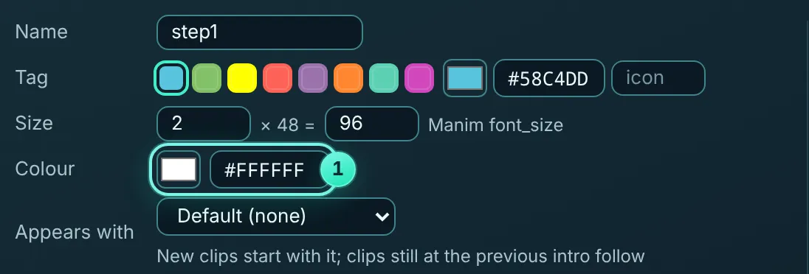
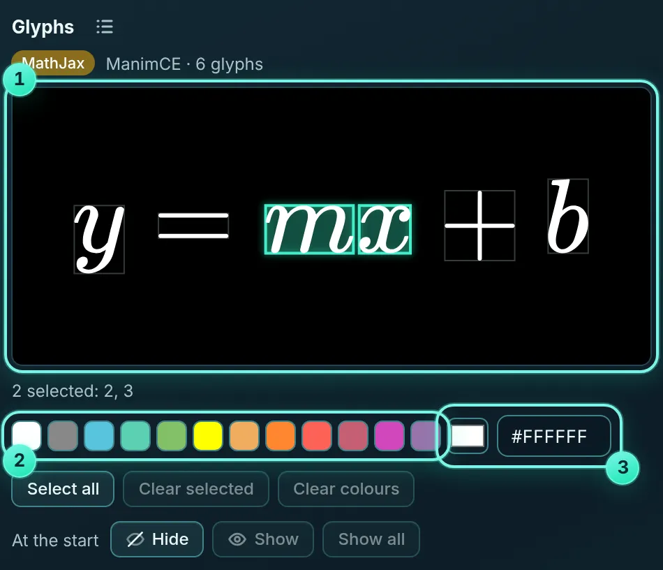
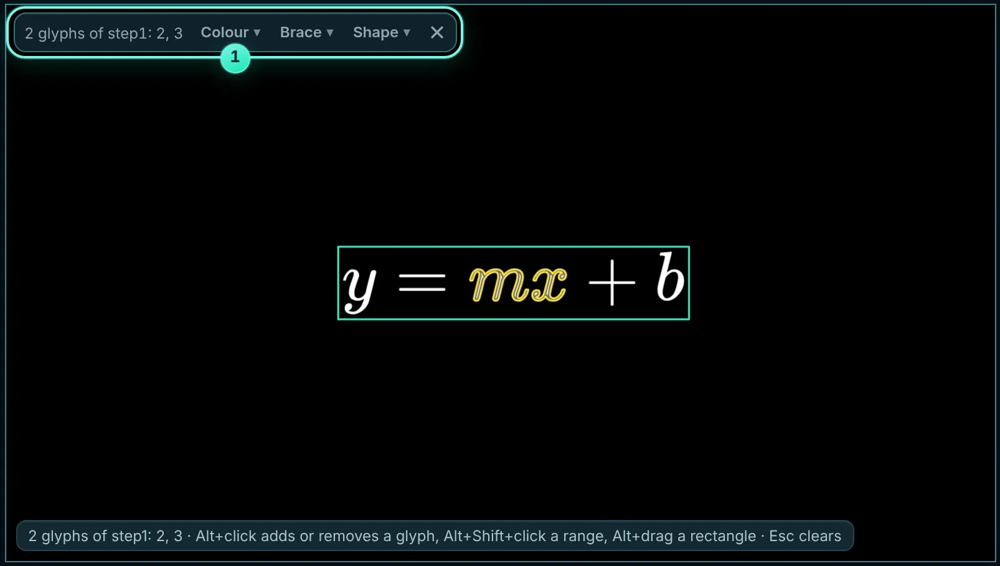
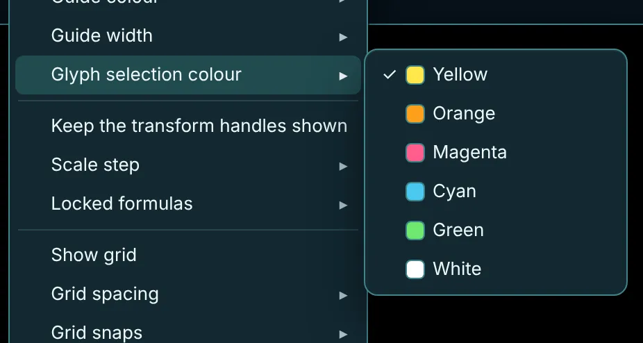
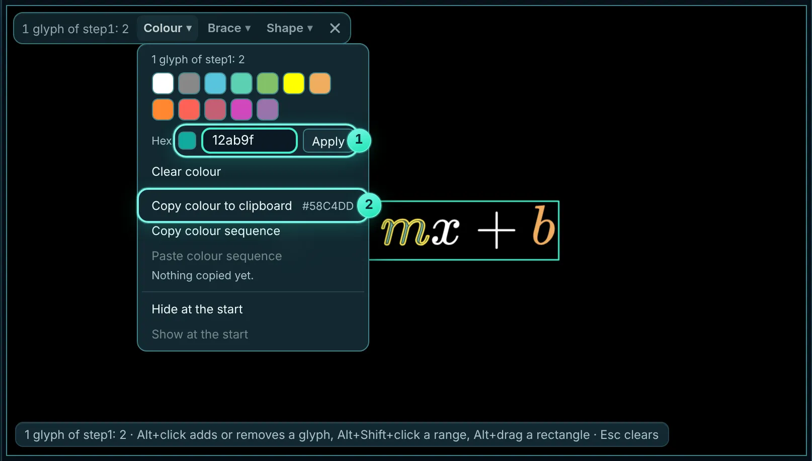
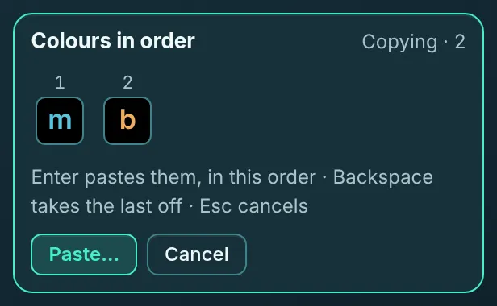
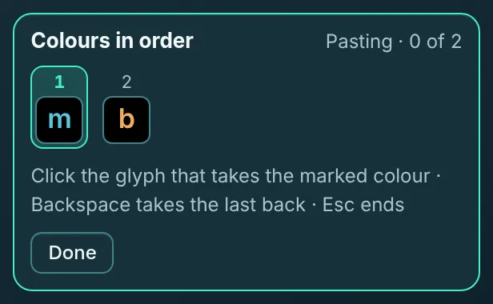
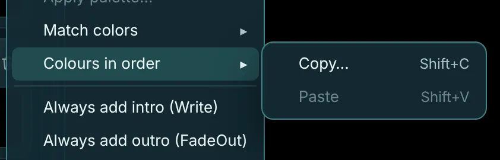
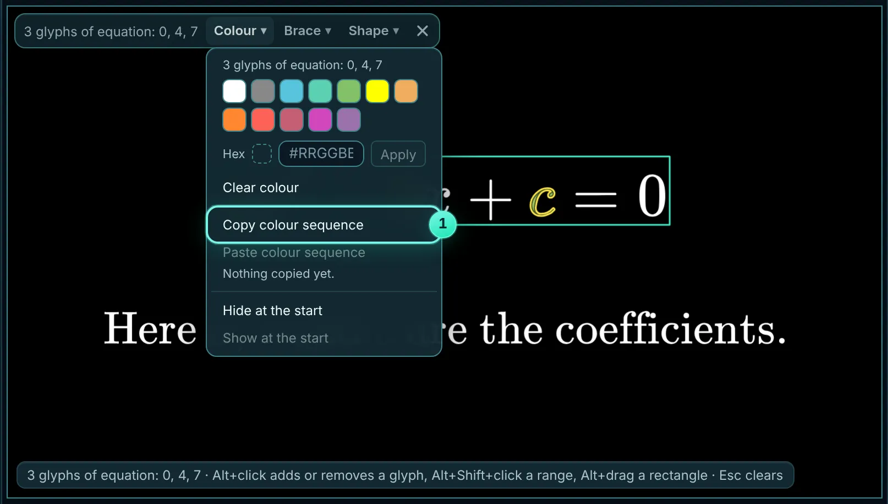
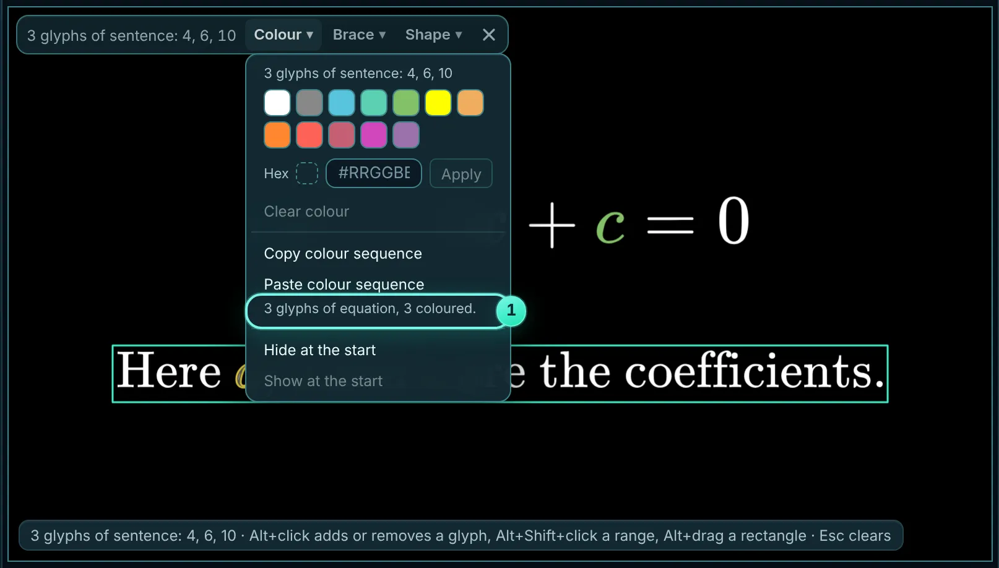

Colouring glyphs and objects
A formula has one colour, and each of its glyphs can have a colour of its own. You set them in the Creator or straight in the Preview, and a glyph keeps its colour through every transformation.
Where a colour lives
A colour belongs to one of three things:
- The formula has a colour. Every glyph without a colour of its own is drawn in it, in every clip of that formula.
- A glyph can have a colour of its own, kept with the formula. It shows in every clip too, and it moves with the glyph through a transformation.
- A clip can change colours while it plays, with the animation blocks of Animation blocks.
A glyph is named by its place in the formula. The glossary calls that place its canonical index; you meet it as the number the glyph view shows under the pointer.
The colour of a whole formula
Double-click a formula in the Creator (or select it and press Enter) to open its editor. The Colour row has a colour picker and a hex field: type a colour, such as #58C4DD, and press Enter, or leave the field.

A new formula is white, as Manim draws a formula by default. With a palette active, it takes the palette's formula colour instead; Palettes tells how.
Glyph by glyph in the Creator
The right half of the editor is the glyph view. It draws every glyph of the formula inside a frame, and shows the index of the one under the pointer. A glyph you have not coloured is drawn in the colour of the formula.
- Click a glyph to select it. Shift+click another to take the range between them, and Ctrl+click to add or remove one. You can also drag a box over several glyphs, and Ctrl held adds them to what is selected.
- Click a swatch to colour the selection, or type any colour in the hex field beside the swatches.
- Clear selected gives the selected glyphs back the colour of the formula, and Clear colours does it for all of them.

The twelve swatches are Manim's own colours, WHITE to PURPLE. With a palette active, its roles follow them. A right-click on the selection offers the same colours, and Hide at the start and Show at the start for the glyphs that should wait for a transformation.
Glyph by glyph in the Preview
You can also colour glyphs where they are on the scene. Hold Alt and click a glyph to pick it; Alt+click it again to let it go. Alt+Shift+click takes a range, and Alt+drag from a formula draws a rectangle that picks the glyphs it touches. The picked glyphs light up in yellow, and a bar in the corner of the Preview names them.

The bar's Colour ▾ menu has the same swatches. A right-click on the ink of a picked glyph opens the same actions, with the colours under Colour. Esc lets the glyphs go, and so does selecting something else.
The glyphs can be of several formulas at once: Alt+click a glyph of another formula and it joins the pick. A colour then goes to all of them as one undo step. Picking glyphs tells the rest.

Any colour: the Hex field
Every Colour menu has a Hex field under its swatches. Type #RRGGBB, or #RGB for a short one; the # is optional. The square beside the label shows the colour you typed, and Enter or Apply uses it. Something that is not a colour is marked, and Apply stays off.
With one glyph picked, Copy colour to clipboard puts the colour that glyph is seen in on the system clipboard, as #RRGGBB, beside the colour itself. It is the glyph's own colour, or the formula's when it has none. Paste it into another Hex field with Ctrl+V, or into any other program. When the browser does not let the page write to the clipboard, a notice shows the colour so that you can type it.

A brace, a shape or a line has one colour and no glyphs to pick. The own menu of a brace or a shape has Colour ▸ with the same swatches and the same Hex field, and a line's colour is in the Line section of the Animations panel. See Braces, Shapes and Lines and arrows.
Colours in order
Two lines of a derivation often say the same thing with other symbols: the m and the b of y = mx + b become the 2 and the 1 of y = 2x + 1. Colours in order copies the colours of some glyphs, one by one, and gives them in that order to others, whatever those are.
- Press Shift+C. The Preview says what to do, and the top of the Animations panel shows a strip, Colours in order.
- Click, one by one, the glyphs whose colours you want. Each click adds a chip to the strip, in the order of your clicks, with its number and its colour. A glyph without a colour of its own adds the colour of its formula.
- Press Enter (or Paste…). The first chip is marked as the next to give out.
- Click the glyphs that take the colours. Each click colours one glyph and removes its chip. With the last colour the mode ends by itself.


The result is the colouring of the next line, and it holds through the transformation between them:
A few details help:
- Backspace takes the last chip off while you copy, and the last glyph back while you paste. Esc cancels a copy; during a paste it ends the mode and keeps what was pasted.
- Only clicks work while the mode is on: no Alt picks, no rectangle, no drag. The playhead can move between two clicks, so you can copy at one time and paste at another.
- The whole paste is one undo step. A pasted colour is the formula's, so it shows in every clip of that formula.
- The list is kept. Shift+V pastes it again from its first colour, onto other glyphs.
The same two commands are in the Edit menu, and at the end of the Preview's right-click menu of a clip, as Copy colours in order… and Paste colours in order.

Copying a colour sequence
When the glyphs are the same symbols in two places, a colour sequence is faster. The classic case is a formula and the sentence that explains it: colour the a, b and c of the equation, then give the same colours to the three letters of the sentence.
- Alt+click the glyphs of the first object. They need not be next to each other.
- Open Colour ▾ in the bar (or right-click a picked glyph) and choose Copy colour sequence. It takes the own colours of the picked glyphs.
- Press Esc, then Alt+click the glyphs of the other object, in this formula or another one.
- Open the menu again and choose Paste colour sequence.

Each glyph takes the colour of the copied glyph that is its symbol. Of several equal symbols, the first takes the first colour, the second the second, in glyph order. A glyph loses its own colour where the copied one had none. The two picks may list their glyphs in another order, but they must be the same symbols, each as many times.
The line under Paste colour sequence says what would be pasted, or why it cannot be: Nothing copied yet.
, The copied sequence has 3 glyphs; this selection has 2.
or The symbols differ
followed by which.

Colouring by pattern
To colour every x of a whole derivation without picking a glyph, give the editor a list of LaTeX patterns and their colours. That is Match colors.
What reaches Manim
Colours leave the editor as plain values. The exported scene colours each glyph of a formula by its place, as you did: the line step1_g[2].set_color("#58C4DD") below is the m of y = mx + b. The file needs no palette, no list and nothing of the editor to run.
Where to go next
- Match colors colours patterns across many formulas at once.
- Palettes by role names your colours and gives new objects the right ones.
- Picking glyphs covers the Alt pick in full.
- Keyboard and mouse shortcuts lists every key of these modes.
- The Pythagorean theorem, in colour builds a whole animation around colours.